Book Ratings Are Broken
“Fun read.” Five stars.
That is the entirety of my review for He Who Fights with Monsters 2 by Shirtaloon. Meanwhile, I also gave five stars to bell hooks’ Feminism Is for Everybody, except that review is 2,516 characters long and covers intersectional feminism, the failures of liberal approaches to gender, and how reading the book made me uncomfortable in ways I needed to sit with. Same star rating. A 280x difference in the amount of effort I put into explaining why. Whatever those five stars are measuring, they’re clearly not measuring the same thing twice.
I’ve rated 569 books on Goodreads, and I have opinions about all of them. Recently ran my own export through some analysis scripts (because apparently this is what data scientists do for fun on a Saturday), and what I found was a bit damning. Not of the books, but of the entire concept of reducing a literary experience to a number between 1 and 5. You can explore the full interactive version of this analysis on my Goodreads Reading Stats app, but here are the highlights.
Quick jargon guide
- Community average: the average Goodreads score from everyone who rated the book, not just me.
- Selection bias: my results are skewed because I usually choose books I already think I will like.
- Survivorship bias: long books I dislike often get abandoned, so the long books I finish look better than they really should.
- Genre bias: I rate some types of books more generously because I read them for different reasons.
- Substitution heuristic: when your brain answers a hard question with an easier one, like "how did I feel at the end?" instead of "how good was this book overall?"
My rating distribution, or: “people who like reading probably rate books highly”
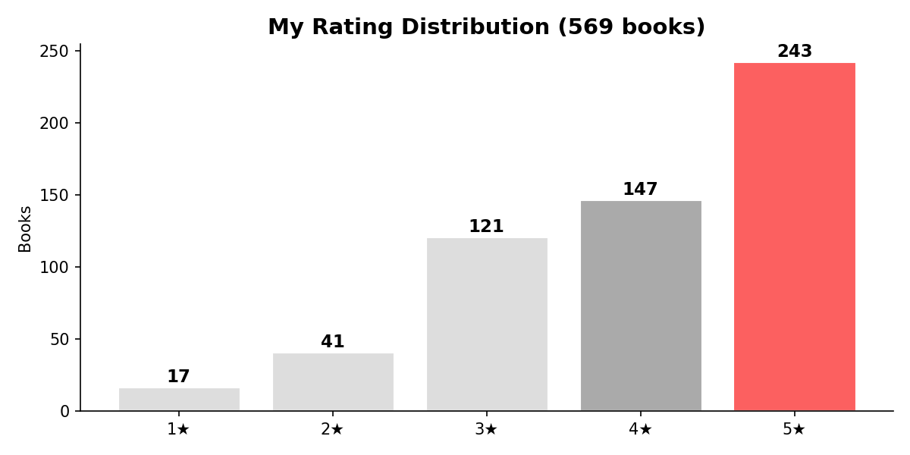
Nearly 70% of everything I’ve ever read gets four or five stars, and my average rating is 3.98. I am, statistically speaking, a pushover. But before you judge me, consider that the average Goodreads rating across all books on the platform is something like 3.9, so I guess we’re all pushovers. The whole system is built to make us generous, because the scale is fundamentally asymmetric: five is “amazing”, one is “I want my hours back”, and the jump from three to two feels like you’re insulting someone’s mum.
Nobody wants to give a three. A three on Goodreads carries the emotional weight of “I thought this was mediocre and I don’t respect your effort”, when what you actually mean is “this was fine, I read it, it exists”, but there is no “fine” on a five-point scale. There’s great, good, meh, bad, and offensive. “Fine” falls between the cracks and usually gets rounded up to four because we’re not monsters (well, most of us, I’ll get to my 1-star reviews shortly).
And as the section header hints at: there’s an elephant in the room. We don’t have a nice bell curve to our ratings because we don’t, on average, find all books 3 stars. Perhaps people who pick up books at random do. Or people who don’t consider themselves “readers” rate ★★★ on average. But most people who read, actually read because, believe it or not, they enjoy the experience. Additionally, most people choose to do things in life that bring them happiness, contentment, joy, or some other measurable reason for it being worth their time. In other words, we usually tend towards books that we will give 4 or 5 stars. So it’s not a huge surprise that most of our ratings ARE 4 or 5 stars.
I apparently write more when I’m angry
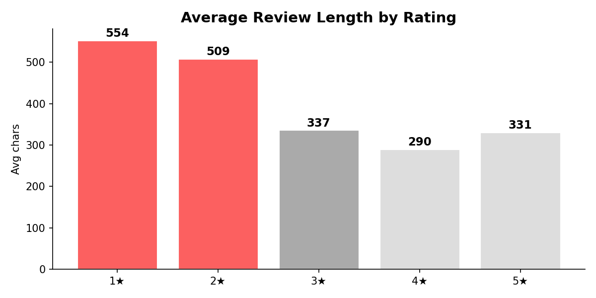
The polynomial regression from my analysis project confirms it (R² = 0.03, meaning review length explains almost nothing about rating):
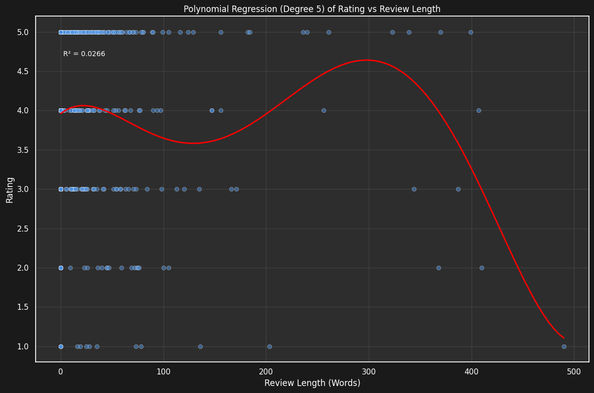
My 1-star reviews are nearly twice as long as my 5-star reviews. Displeasure, it turns out, makes me far more articulate than joy. When I love something, I tend to write things like “I’m crying, 10/10” (my full review of The Book Thief, which is genuinely one of the best novels I’ve ever read and apparently all I could muster was a numerical score inside a text review that already has a numerical score). When I hate something, I can produce a multi-paragraph breakdown of exactly why, complete with quotes, structural criticism, and not very well concealed contempt.
My shortest 5-star reviews, for context:
- “Fun read.” (9 chars) for He Who Fights with Monsters 2
- “Still great.” (12 chars) for He Who Fights with Monsters
- “What a world.” (13 chars) for The Fires of Heaven
- “I’m crying, 10/10.” (18 chars) for The Book Thief
And my longest 5-star reviews run past 2,000 characters on bell hooks, Huckleberry Finn, and The Glass Castle. These are thoughtful, careful pieces of writing that engage with the text critically. They are not the same kind of “five stars” as “Fun read.” and yet the system treats them identically. A chef’s kiss and a doctoral thesis get the same gold sticker.
How much do I actually agree with everyone else?
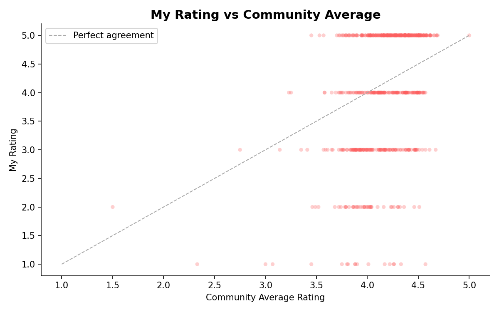
The difference in community average between my absolute favourites and the books I genuinely despised is 0.45 stars. Less than half a star. The community thinks my 1-star books are perfectly respectable 3.8-star reads. I’m not out here hating universally panned disasters; I’m hating books that most people thought were pretty good.
I rate lower than the community more often than I rate higher (292 vs 274 out of 569). My average difference is -0.18 stars, with a standard deviation of 1.02. So on average I’m very slightly harsher than the crowd, but my individual ratings scatter all over the place. The standard deviation of over 1 star means that knowing the community average tells you almost nothing about what I’ll rate a book. We’re nominally measuring the same thing and arriving at wildly different numbers.
My biggest contrarian moments include giving 1 star to Sapiens (community: 4.33), Surely You’re Joking, Mr. Feynman! (community: 4.26), and The Primal Hunter 8 (community: 4.57). On the other side, I gave 5 stars to Stan Nicholls’ Orcs (community: 3.45) and Steinbeck’s The Pearl (community: 3.57), both of which most readers found thoroughly unremarkable. Either I have eccentric taste or the star system is too blunt to capture genuine critical disagreement. Probably both.
I’m not even consistent across genres
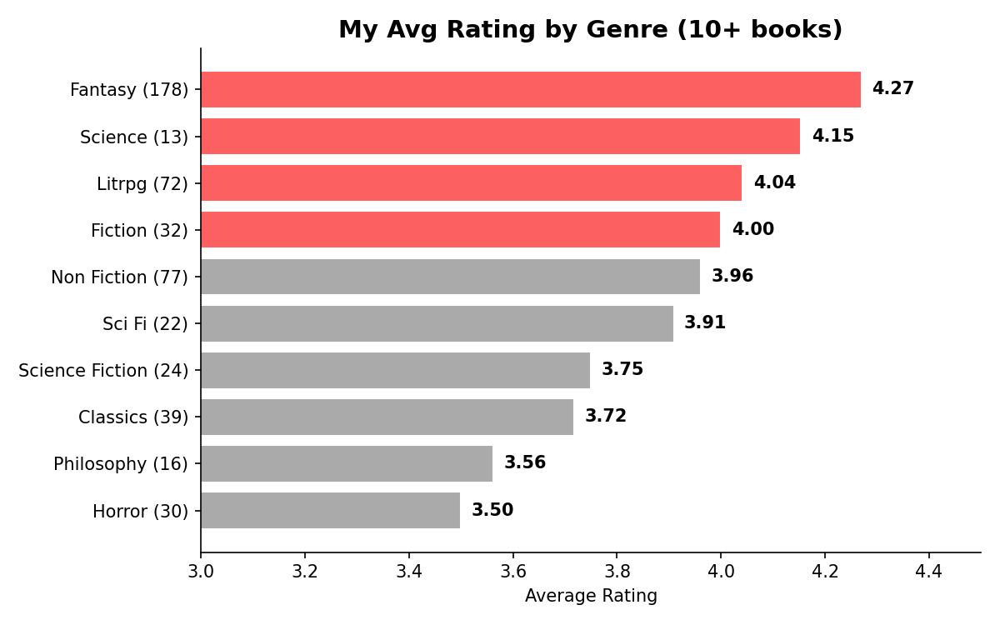
The rating density curves by genre from the analysis project show this even more clearly:
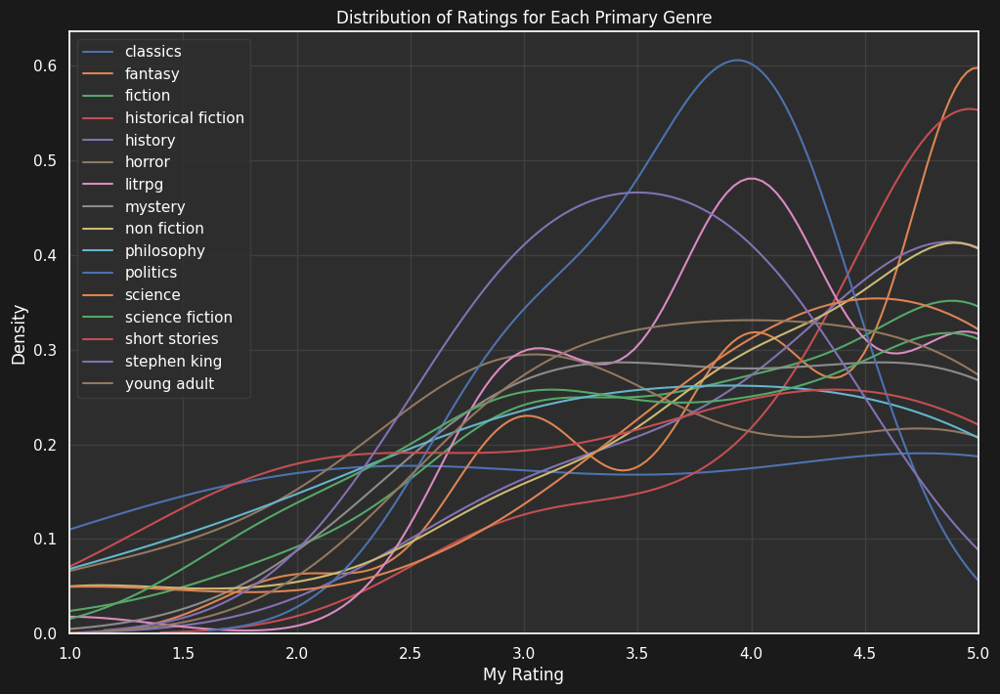
And here’s how my genre consumption has shifted over time (from the analysis project):
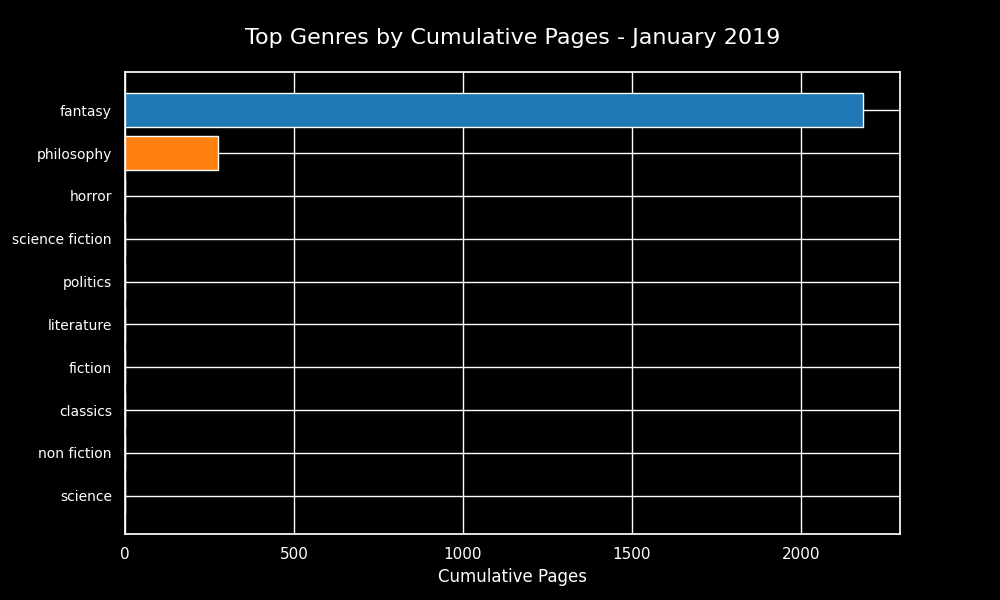
I rate fantasy nearly a full star higher than horror. This doesn’t mean fantasy literature is objectively superior to horror (I can feel the Stephen King fans warming up their keyboards). What it means is that I pick fantasy books I’m predisposed to enjoy, and I pick horror books that are more likely to challenge or unsettle me. The genres I consume for comfort get higher ratings than the genres I consume for discomfort. The stars are measuring my selection bias, which is a finding that would make any data scientist wince, because selection bias is the thing we spend our entire careers trying to eliminate from datasets, and here it is sitting proudly in my own reading data. Human after all!
The longer the book, the more I like it
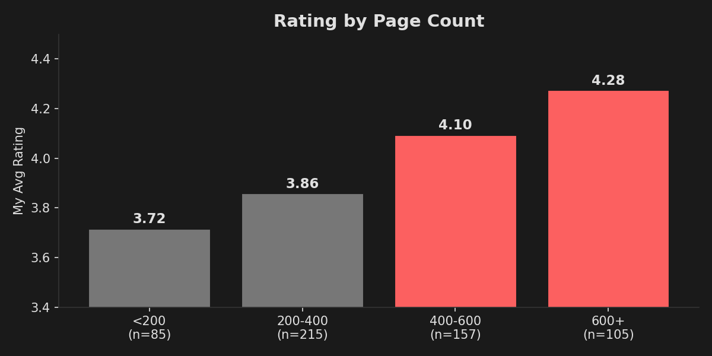
There’s more than half a star difference between short books and long ones. The obvious interpretation is that longer books are better. The actual interpretation is that I only finish long books I’m enjoying. A 200-page book I’m not into, I’ll push through and rate a 3. A 600-page book I’m not into, I probably abandoned 200 pages in and never rated it at all. This is survivorship bias dressed up as a preference, and it would completely wreck any model trying to predict my ratings from metadata alone. (This is the kind of thing I explore in more depth in the Goodreads Analysis app, where I actually tried to build rating prediction models and the results were... humbling.)
Books I’ve reread average 4.28 stars (n=50). First reads average 3.95 (n=519). That’s a third of a star difference, and it makes perfect sense: you don’t reread books you didn’t like. But it also means my “read” shelf is contaminated with a population of books that are structurally guaranteed to be rated higher than average. Any analysis that doesn’t account for this is working with biased data. Again, selection bias. It’s everywhere.
What happens when you rate a 10-book series
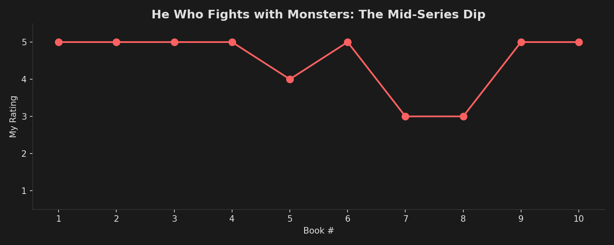
When you read a long series, your ratings tell a story of their own.
Lightbringer by Brent Weeks: 5 → 5 → 5 → 5 → 2. Four perfect scores and then a nosedive for the finale. I wrote in my review that the final book felt like “more of a lecture on religion than anything” and that a “perfect deity” ruined what had been a nuanced theological narrative. The series rating dropped by 3 stars in one book.
Abhorsen by Garth Nix: 5 → 5 → 5 → 3 → 3. The original trilogy is pristine. Then the author wrote two more books, and you can feel the story being stretched beyond what it was designed to hold. My review of Goldenhand says “the author likely intended the books to be a trilogy, and had to force the last 2 books in.” The data agrees.
He Who Fights with Monsters by Shirtaloon: 5 → 5 → 5 → 5 → 4 → 5 → 3 → 3 → 5 → 5. The chart above tells the story: four perfect books, a brief wobble, a mid-series dip into 3-star territory around books 7 and 8, then a full recovery. Ten data points and the pattern is obvious, but a single “average series rating” of 4.5 would completely hide the fact that I nearly fell off the series halfway through.
These are exactly the kind of patterns that a flat star average completely obscures, and exactly the kind of thing that becomes visible when you actually visualise your reading data over time. The reading stats app shows these patterns for any Goodreads export, if you’re curious about your own.
The silence is deafening
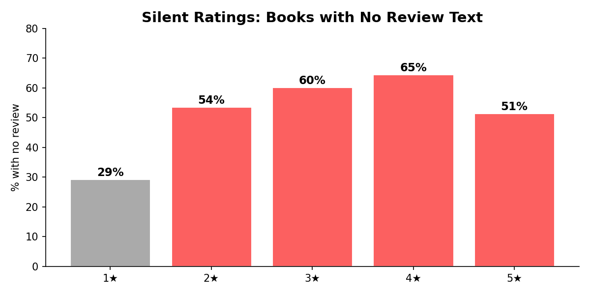
More than half of my 5-star books have absolutely no review text. I felt strongly enough to give them the highest possible rating, the literary equivalent of a standing ovation, but couldn’t be bothered to write a single sentence about why. Meanwhile, 71% of my 1-star books have reviews. The threshold for writing isn’t “I need to express how much I loved this”, it’s “I need to explain why this is bad.”
The 5-star rating without a review is doing no work whatsoever. It’s a gut-level thumbs up that contains no information about what made the book worthwhile, who it’s for, or whether it’s the kind of “good” that would mean anything to someone who isn’t me. But I usually give these to books that are truly just the comfort food of books for me: LitRPG, fantasy, things that scratch a simple itch for semi-background audiobook listening. Sometimes, these give me wonderful gutpunches, such as when a great bit of writing shines through, or a character death hits me hard, and I end up writing a review. But a 5★ can ultimately mean “This is a literary masterpiece that I can’t fault” or “yeah I blasted through this while doing gardening for a weekend, I had a great time though I can’t fully remember half of the characters’ names”.
What would actually be better?
Half-star ratings would solve a lot, honestly. The jump from 3 to 4 is where most of the ambiguity lives, and a 3.5 would let people express “I liked this but it didn’t blow my mind” without feeling like they’re being stingy. Goodreads has resisted this for over a decade, presumably because simplicity drives engagement, even when that simplicity makes the data nearly useless for recommendations.
Genre-relative ratings would help with the bias problem. A 5-star horror novel is a fundamentally different statement from a 5-star cozy fantasy, and the current system pretends they’re equivalent. A “would you recommend this?” yes/no alongside the stars would capture something the number alone can’t: intent. I’ve given 3-star ratings to books I’d wholeheartedly recommend (because they were important and well-written but not enjoyable) and 5-star ratings to books I’d never recommend to anyone (because they were perfect for me and not my friends).
The best rating, in my humble opinion, is the review itself. The stars are just the emoji at the end of the sentence. If you want to know what I thought, read the words. The number is a courtesy, not a conclusion.
Kahneman would call the star rating a substitution heuristic: when asked a hard question (“how good is this book?”), we substitute an easier one (“how did I feel when I finished it?”). The answer is fast, intuitive, and largely disconnected from the thing it’s supposed to measure. System 1 thinking applied to a System 2 question. We do this all the time, apparently. Even those of us who should know better, having read the book that explains exactly why we do it. And given it five stars.
The reading continues
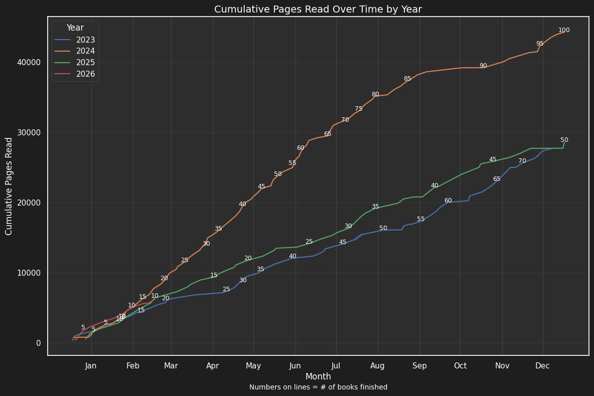
I’m not going to stop rating books. The system is broken but it’s the one we have, and there’s something satisfying about the closure of assigning a number, even a flawed one. What I can do is get better at the part that actually matters: writing about why. 51% of my five-star books have no review. That’s 125 books I loved enough to award full marks but not enough to spend two minutes explaining. That’s a lot of lost context, and it’s context that future-me (and anyone browsing my Goodreads) would benefit from having.
The chart above shows my cumulative pages read over time. 2024 was my biggest year: 100 books, over 40,000 pages. 2026 is off to a strong start. The volume isn’t going to slow down. But maybe the ratio of rated-to-reviewed can improve. Maybe I can push that 51% silent rate down to 30%. Maybe the next time I finish a book and feel that five-star glow, I can take sixty seconds to write something more useful than “Fun read.”
Probably not, though. Some books really are just fun reads.
If any of this has made you curious about your own reading data, you can export your Goodreads library and upload it to my Goodreads Reading Stats app. It’ll show you your own rating distribution, genre biases, reading timeline, and a few other things I built while procrastinating on this blog post. It won’t fix the rating system, but it might make you feel seen. And if you want to see the source material behind this post, you can browse my Goodreads profile here.
Common questions
Are you saying star ratings are useless?
Not completely. They are useful as a quick emotional signal, but they are far too blunt to capture why a book worked or failed for a reader.
Why are your ratings so high overall?
Because I usually pick books I expect to like, and I often abandon books that are clearly not for me. That pushes the average upward before the rating system even enters the picture.
Would half-stars fix the whole problem?
No, but they would reduce some of the compression in the middle of the scale. They would make it easier to say "pretty good" without pretending that means the same thing as "excellent."
What is actually more useful than a star rating?
A short review. Even two or three sentences about what worked, what failed, and who the book is for carries far more signal than a lone number.